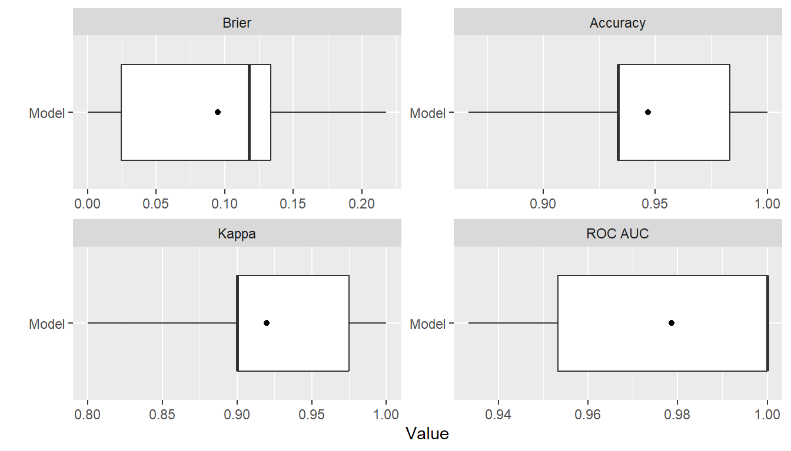
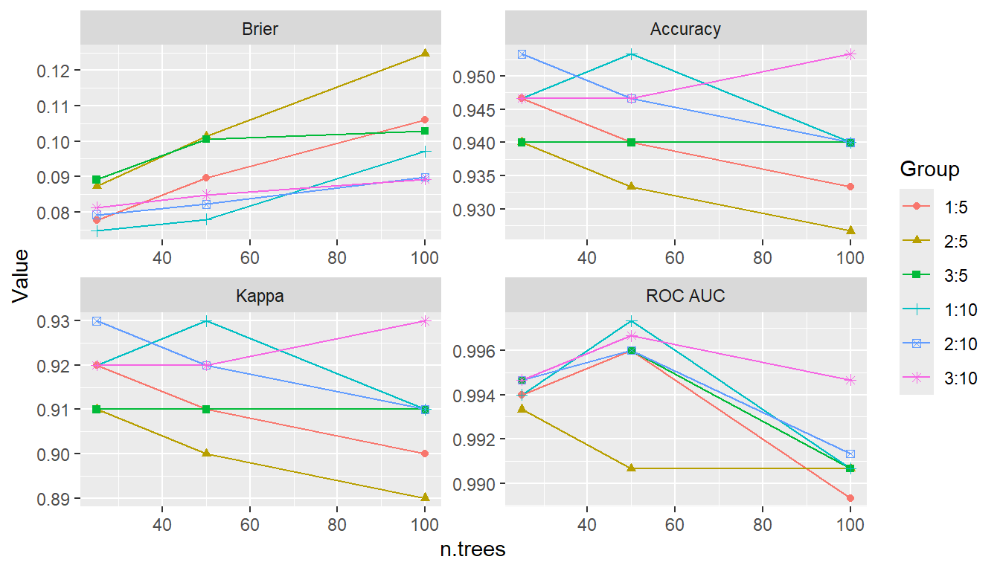
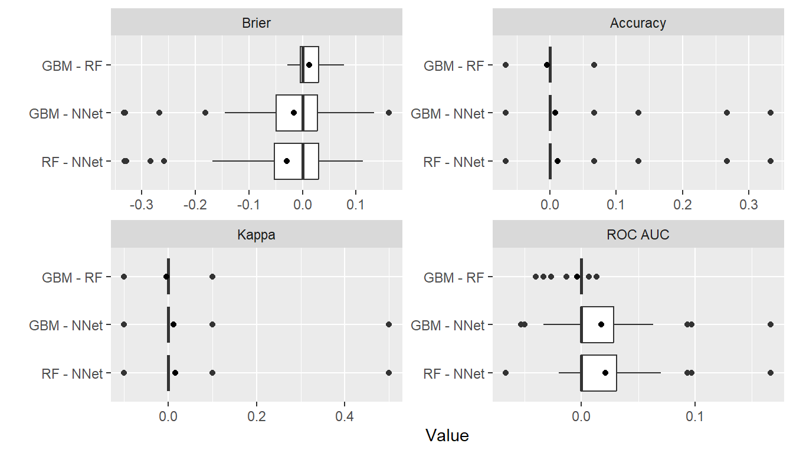
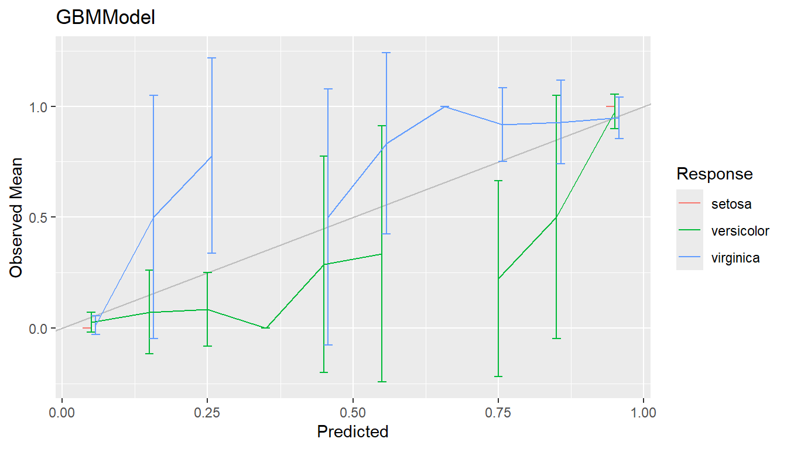
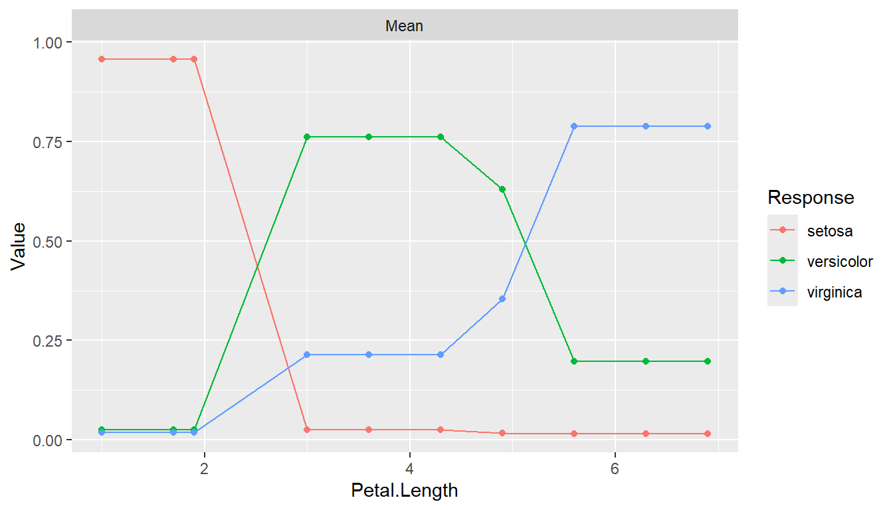
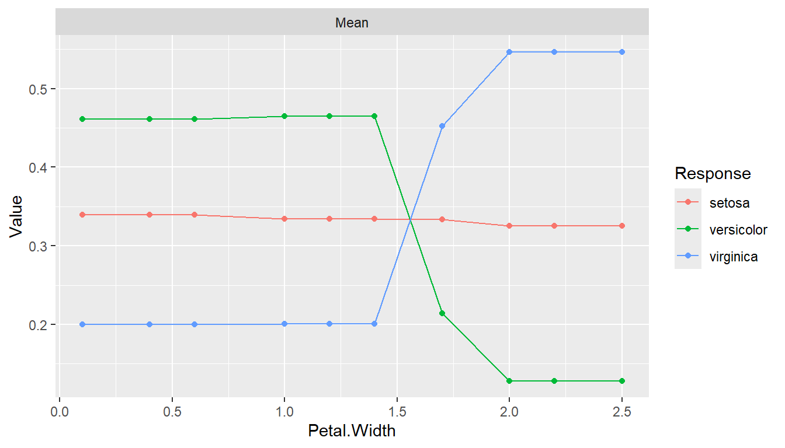

Example
Iris Flowers Species
The following illustrates use of the package to predict the species of flowers in Edgar Anderson’s iris data set.
| Characteristic | Value |
|---|---|
| Number of flowers | 150 |
| Species | |
| setosa | 50 (33.33%) |
| versicolor | 50 (33.33%) |
| virginica | 50 (33.33%) |
| Sepal.Length | |
| Median (Range) | 5.8 (4.3, 7.9) |
| Sepal.Width | |
| Median (Range) | 3 (2.0, 4.4) |
| Petal.Length | |
| Median (Range) | 4.35 (1.0, 6.9) |
| Petal.Width | |
| Median (Range) | 1.3 (0.1, 2.5) |
Training and Test Set Analysis
## Analysis libraries
library(MachineShop)
library(magrittr)
## Training and test sets
set.seed(123)
train_indices <- sample(nrow(iris), nrow(iris) * 2 / 3)
trainset <- iris[train_indices, ]
testset <- iris[-train_indices, ]
## Model formula
fo <- Species ~ .
## Models available for factor responses
modelinfo(factor(0)) %>% names
#> [1] "AdaBagModel" "AdaBoostModel" "BARTModel"
#> [4] "C50Model" "CForestModel" "EarthModel"
#> [7] "FDAModel" "GBMModel" "GLMModel"
#> [10] "GLMNetModel" "KNNModel" "LDAModel"
#> [13] "LMModel" "MDAModel" "NaiveBayesModel"
#> [16] "NNetModel" "ParsnipModel" "PDAModel"
#> [19] "PLSModel" "QDAModel" "RandomForestModel"
#> [22] "RangerModel" "RFSRCModel" "RPartModel"
#> [25] "SelectedModel" "StackedModel" "SuperModel"
#> [28] "SVMModel" "SVMANOVAModel" "SVMBesselModel"
#> [31] "SVMLaplaceModel" "SVMLinearModel" "SVMPolyModel"
#> [34] "SVMRadialModel" "SVMSplineModel" "SVMTanhModel"
#> [37] "TreeModel" "TunedModel" "XGBModel"
#> [40] "XGBDARTModel" "XGBLinearModel" "XGBTreeModel"
## Model-specific information
modelinfo(GBMModel)
#> $GBMModel
#> $GBMModel$label
#> [1] "Generalized Boosted Regression"
#>
#> $GBMModel$packages
#> [1] "gbm"
#>
#> $GBMModel$response_types
#> [1] "factor" "numeric" "PoissonVariate" "Surv"
#>
#> $GBMModel$weights
#> [1] TRUE
#>
#> $GBMModel$arguments
#> function (distribution = character(), n.trees = 100, interaction.depth = 1,
#> n.minobsinnode = 10, shrinkage = 0.1, bag.fraction = 0.5)
#> NULL
#>
#> $GBMModel$grid
#> [1] TRUE
#>
#> $GBMModel$varimp
#> [1] TRUE
## Generalized boosted model fit to training set
iris_fit <- fit(fo, data = trainset, model = GBMModel)
## Variable importance
(vi <- varimp(iris_fit))
#> --- VariableImportance object --------------------------------------------------
#> Permute.mean.brier
#> Petal.Length 100.0000000
#> Petal.Width 29.9063212
#> Sepal.Length 3.7072625
#> Sepal.Width 0.1221489
plot(vi)
## Test set predicted probabilities
predict(iris_fit, newdata = testset, type = "prob") %>% head
#> setosa versicolor virginica
#> [1,] 0.9999432 5.669268e-05 9.008716e-08
#> [2,] 0.9999555 4.434856e-05 1.202762e-07
#> [3,] 0.9999636 3.624727e-05 1.202771e-07
#> [4,] 0.9999636 3.624727e-05 1.202771e-07
#> [5,] 0.9998665 1.333510e-04 1.110550e-07
#> [6,] 0.9998370 1.628782e-04 1.356454e-07
## Test set predicted classifications
predict(iris_fit, newdata = testset) %>% head
#> [1] setosa setosa setosa setosa setosa setosa
#> Levels: setosa versicolor virginica
## Test set performance
obs <- response(iris_fit, newdata = testset)
pred <- predict(iris_fit, newdata = testset, type = "prob")
performance(obs, pred)
#> Brier Accuracy Kappa
#> 0.07965035 0.96000000 0.93939394Resampling
## Resample estimation of model performance
(res <- resample(fo, data = iris, model = GBMModel, control = CVControl))
#> --- Resample object ------------------------------------------------------------
#>
#> Model: GBMModel
#> Sampling variables:
#> # A tibble: 150 x 2
#> Case Stratification$`(strata)`
#> <chr> <fct>
#> 1 1 setosa
#> 2 2 setosa
#> 3 3 setosa
#> 4 4 setosa
#> 5 5 setosa
#> 6 6 setosa
#> 7 7 setosa
#> 8 8 setosa
#> 9 9 setosa
#> 10 10 setosa
#> # ... with 140 more rows
#>
#> === CVControl object ===
#>
#> Label: K-Fold Cross-Validation
#> Folds: 10
#> Repeats: 1
summary(res)
#> Statistic
#> Metric Mean Median SD Min Max NA
#> Brier 0.08267491 0.0282503 0.10161350 1.510535e-05 0.2610908 0
#> Accuracy 0.95333333 0.9666667 0.05488484 8.666667e-01 1.0000000 0
#> Kappa 0.93000000 0.9500000 0.08232726 8.000000e-01 1.0000000 0
plot(res)
Performance Metrics
## Default performance metrics
performance(res) %>% summary
#> Statistic
#> Metric Mean Median SD Min Max NA
#> Brier 0.08267491 0.0282503 0.10161350 1.510535e-05 0.2610908 0
#> Accuracy 0.95333333 0.9666667 0.05488484 8.666667e-01 1.0000000 0
#> Kappa 0.93000000 0.9500000 0.08232726 8.000000e-01 1.0000000 0
## Metrics available for the resample output
metricinfo(res) %>% names
#> [1] "accuracy" "brier" "cross_entropy" "kappa2"
## User-specified metrics
performance(res, c(accuracy, kappa2)) %>% summary
#> Statistic
#> Metric Mean Median SD Min Max NA
#> accuracy 0.9533333 0.9666667 0.05488484 0.8666667 1 0
#> kappa2 0.9300000 0.9500000 0.08232726 0.8000000 1 0Model Tuning
## Tune over a grid of model parameters
iris_fit <- TunedModel(
GBMModel,
grid = expand_params(n.trees = c(25, 50, 100),
interaction.depth = 1:3,
n.minobsinnode = c(5, 10))
) %>% fit(fo, data = iris)
## Variable importance
varimp(iris_fit)
#> --- VariableImportance object --------------------------------------------------
#> Permute.mean.brier
#> Petal.Length 100.0000000
#> Petal.Width 21.0545805
#> Sepal.Length 0.2065820
#> Sepal.Width -0.1051643
## Plot performance over the grid points
tuned_model <- as.MLModel(iris_fit)
plot(tuned_model, type = "line")
#> $TrainingStep1
Model Comparisons
## Model comparisons
control <- CVControl(folds = 10, repeats = 5)
res1 <- resample(fo, data = iris, model = GBMModel(n.tree = 50), control = control)
res2 <- resample(fo, data = iris, model = RandomForestModel(ntree = 50), control = control)
res3 <- resample(fo, data = iris, model = NNetModel(size = 5), control = control)
res <- c(GBM = res1, RF = res2, NNet = res3)
summary(res)
#> , , Metric = Brier
#>
#> Statistic
#> Model Mean Median SD Min Max NA
#> GBM 0.08613621 0.08344689 0.08098959 5.730920e-05 0.3131089 0
#> RF 0.07230400 0.06562667 0.07035875 1.600000e-04 0.2494400 0
#> NNet 0.08361831 0.02668369 0.10371418 4.372129e-50 0.3333333 0
#>
#> , , Metric = Accuracy
#>
#> Statistic
#> Model Mean Median SD Min Max NA
#> GBM 0.9426667 0.9333333 0.05554921 0.8000000 1 0
#> RF 0.9480000 0.9333333 0.05760134 0.8000000 1 0
#> NNet 0.9480000 1.0000000 0.08334286 0.6666667 1 0
#>
#> , , Metric = Kappa
#>
#> Statistic
#> Model Mean Median SD Min Max NA
#> GBM 0.914 0.9 0.08332381 0.7 1 0
#> RF 0.922 0.9 0.08640200 0.7 1 0
#> NNet 0.924 1.0 0.11876920 0.5 1 0
plot(res)
## Pairwise model differences and t-tests
perfdiff <- diff(res)
summary(perfdiff)
#> , , Metric = Brier
#>
#> Statistic
#> Model Mean Median SD Min Max NA
#> GBM - RF 0.013832206 0.0023188119 0.02824823 -0.07255256 0.0649495 0
#> GBM - NNet 0.002517897 0.0002376294 0.11153858 -0.33279967 0.2092335 0
#> RF - NNet -0.011314309 0.0042158032 0.10817073 -0.33087877 0.2158933 0
#>
#> , , Metric = Accuracy
#>
#> Statistic
#> Model Mean Median SD Min Max NA
#> GBM - RF -5.333333e-03 0 0.02963114 -0.1333333 0.06666667 0
#> GBM - NNet -5.333333e-03 0 0.09217946 -0.2000000 0.33333333 0
#> RF - NNet 6.656595e-18 0 0.09331389 -0.2000000 0.33333333 0
#>
#> , , Metric = Kappa
#>
#> Statistic
#> Model Mean Median SD Min Max NA
#> GBM - RF -0.010 0 0.0462910 -0.2 0.1 0
#> GBM - NNet -0.008 0 0.1382692 -0.3 0.5 0
#> RF - NNet 0.002 0 0.1406835 -0.3 0.5 0
t.test(perfdiff)
#> --- PerformanceDiffTest object -------------------------------------------------
#>
#> Upper diagonal: mean differences (Model1 - Model2)
#> Lower diagonal: p-values
#> P-value adjustment method: holm
#>
#> , , Metric = Brier
#>
#> Model2
#> Model1 GBM RF NNet
#> GBM NA 0.01383221 0.002517897
#> RF 0.5474415 NA -0.011314309
#> NNet 1.0000000 1.00000000 NA
#>
#> , , Metric = Accuracy
#>
#> Model2
#> Model1 GBM RF NNet
#> GBM NA -0.005333333 -5.333333e-03
#> RF 1 NA 6.656595e-18
#> NNet 1 1.000000000 NA
#>
#> , , Metric = Kappa
#>
#> Model2
#> Model1 GBM RF NNet
#> GBM NA -0.01 -0.008
#> RF 1 NA 0.002
#> NNet 1 1.00 NA
plot(perfdiff)
Ensemble Models
## Stacked regression
stackedmodel <- StackedModel(GBMModel, RandomForestModel, NNetModel)
res_stacked <- resample(fo, data = iris, model = stackedmodel)
summary(res_stacked)
#> Statistic
#> Metric Mean Median SD Min Max NA
#> Brier 0.07356443 0.03300204 0.08895175 1.268861e-05 0.2284539 0
#> Accuracy 0.95333333 1.00000000 0.07062333 8.000000e-01 1.0000000 0
#> Kappa 0.93000000 1.00000000 0.10593499 7.000000e-01 1.0000000 0
## Super learner
supermodel <- SuperModel(GBMModel, RandomForestModel, NNetModel)
res_super <- resample(fo, data = iris, model = supermodel)
summary(res_super)
#> Statistic
#> Metric Mean Median SD Min Max NA
#> Brier 0.07006886 0.01588169 0.11646206 3.850692e-10 0.3723064 0
#> Accuracy 0.96000000 1.00000000 0.06440612 8.000000e-01 1.0000000 0
#> Kappa 0.94000000 1.00000000 0.09660918 7.000000e-01 1.0000000 0Calibration Curves
cal <- calibration(res1)
plot(cal, se = TRUE)
Confusion Matrices
(conf <- confusion(res1, cutoff = NULL))
#> --- ConfusionList object -------------------------------------------------------
#>
#> === $GBMModel ==================================================================
#> === ConfusionMatrix object ===
#> Observed
#> Predicted setosa versicolor virginica
#> setosa 249.25175820 0.24328329 0.08927864
#> versicolor 0.73523117 230.23887674 24.79565856
#> virginica 0.01301063 19.51783997 225.11506280
summary(conf)
#> --- $GBMModel ------------------------------------------------------------------
#> Number of responses: 750
#> Accuracy (SE): 0.9394743 (0.008707267)
#> Majority class: 0.3333333
#> Kappa: 0.9092114
#>
#> setosa versicolor virginica
#> Observed 0.3333333 0.3333333 0.3333333
#> Predicted 0.3327791 0.3410264 0.3261946
#> Agreement 0.3323357 0.3069852 0.3001534
#> Sensitivity 0.9970070 0.9209555 0.9004603
#> Specificity 0.9993349 0.9489382 0.9609383
#> PPV 0.9986675 0.9001802 0.9201669
#> NPV 0.9985048 0.9600164 0.9507574plot(conf)Partial Dependence Plots
pd <- dependence(iris_fit, select = c(Petal.Length, Petal.Width))
plot(pd)
Preprocessing Recipe
library(recipes)
rec <- recipe(fo, data = iris) %>%
role_case(stratum = Species)
iris_fit <- fit(rec, model = GBMModel)
varimp(iris_fit)
#> --- VariableImportance object --------------------------------------------------
#> Permute.mean.brier
#> Petal.Length 100.0000000
#> Petal.Width 22.3985446
#> Sepal.Width 2.3022635
#> Sepal.Length 0.5787206
res <- resample(rec, model = GBMModel, control = CVControl)
summary(res)
#> Statistic
#> Metric Mean Median SD Min Max NA
#> Brier 0.1150331 0.1034656 0.13143726 5.928214e-06 0.346104 0
#> Accuracy 0.9333333 0.9333333 0.07698004 8.000000e-01 1.000000 0
#> Kappa 0.9000000 0.9000000 0.11547005 7.000000e-01 1.000000 0